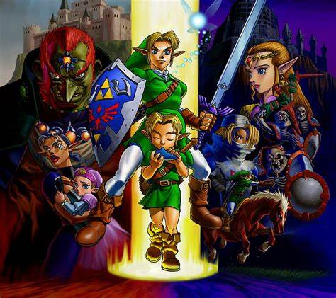
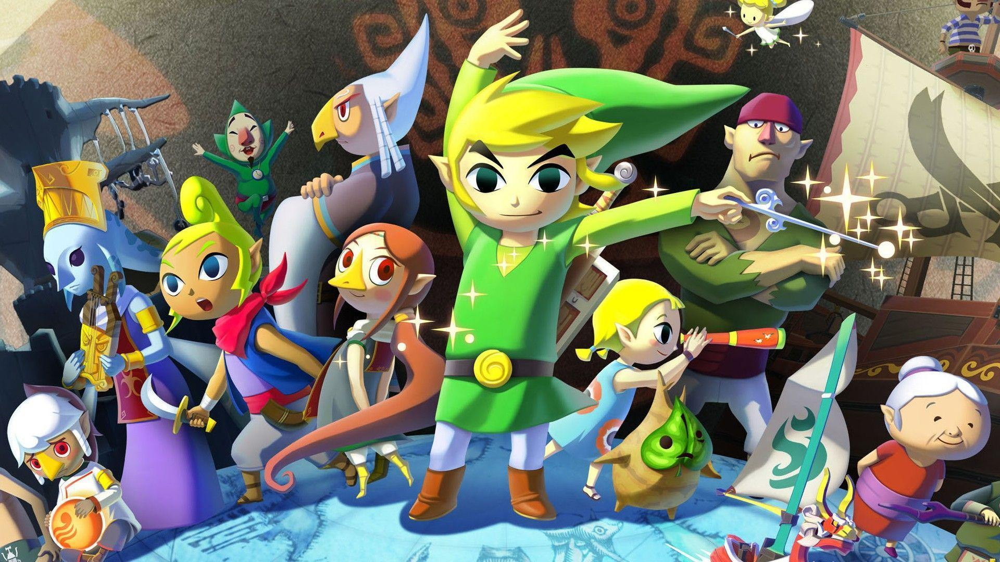

“Those who share the blood of the goddess and the spirit of the hero… They are eternally bound to this curse. An incarnation of my hatred shall ever follow your kind, dooming them to wander a blood-soaked sea of darkness for all time!”
The Legend of Zelda Timeline
The Legend of Zelda timeline is a labyrinth of intertwining narratives, a tapestry woven across generations and dimensions. It's a saga that has sparked countless discussions, debates, and fan theories. As new games emerge, the threads of the timeline shift, creating a dynamic canvas where each player can contribute their own strokes.
Why is it so convoluted? Well, imagine a Hylian puzzle box—its pieces scattered across time, realms, and alternate realities. Theories abound, and passionate fans construct their own intricate solutions. Some believe in a single, cohesive timeline, while others embrace the multiverse, where divergent paths coexist.
Yet amidst this chaos, there's a common ground—a sacred origin point. Skyward Sword, like the mythical blade it bears, cleaves through the fog of uncertainty. It sets the stage, revealing the genesis of Hyrule, the birth of the Master Sword, and the eternal struggle between light and shadow.
So, whether you're a seasoned adventurer or a newcomer to Hyrule, let's embark on this journey together. From the golden era of A Link to the Past to the time-traveling odyssey of Ocarina of Time, from the twilight-infused realms of Twilight Princess to the vast seas of Wind Waker, we'll explore the pivotal moments that shape the legend.
Skyward Sword
In this game, players witness the birth of the Master Sword, the forging of destiny, and the emergence of Hyrule. The floating island of Skyloft becomes the cradle of legends, setting the stage for all future adventures. As Link embarks on his quest, he discovers ancient prophecies, divine relics, and the intricate dance of fate that binds him to Zelda and Ganon across the ages.

A Link to the Past
As the hero Link, players explore the Golden Era of Hyrule, uncovering the secrets of the Sacred Realm and wielding the Master Sword. The parallel worlds of Light and Dark intertwine, shaping the course of history. The quest to rescue Princess Zelda transcends mere heroics; it becomes a timeless struggle against malevolence that echoes through generations.

Ocarina of Time
Embark on a 3D odyssey as Link, discovering the Temple of Time, mastering the Ocarina of Time, and facing the malevolent Ganon. The game’s split timelines lead to divergent destinies for Hyrule and its hero. As Link matures from a wide-eyed child to a seasoned warrior, the threads of courage, wisdom, and power weave together, shaping the very fabric of existence.
The Wind Waker
Sail the Great Sea as the Hero of Winds, uncovering the submerged ruins of Hyrule and battling ancient evils. The Wind Waker guides your voyage, revealing the legacy of courage passed down through generations. As you navigate treacherous waters, the echoes of forgotten heroes resonate, reminding you that even in a world drowned by catastrophe, hope remains buoyant.
Twilight Princess
Plunge into the twilight-infested realm, where Link transforms into a wolf and allies with the enigmatic Midna. The struggle between Light and Dark echoes across time, leaving its mark on Hyrule. As the twilight envelops the land, secrets buried in shadow emerge—a tale of sacrifice, redemption, and the enduring bond between unlikely companions.
Breath of the Wild
Awaken in a post-apocalyptic Hyrule, where the Calamity Ganon threatens to consume all. Explore the vast open world, uncover ancient technology, and reclaim the legacy of the Chosen Hero. The shattered memories of a forgotten past guide your steps, and as you climb the peaks, traverse the fields, and face the remnants of a fallen kingdom, you become a beacon of hope in a world teetering on oblivion.
Tears of the Kingdom
(Note: This game is fictional and not part of the official series) In this imagined adventure, players embark on a quest beyond the established timeline. New dimensions, characters, and mysteries await, shaping the very fabric of Zelda’s universe. As you unravel the enigma of the Tears of the Kingdom, you redefine the boundaries of heroism and rewrite the legends etched in pixelated pixels and whispered across console generations.